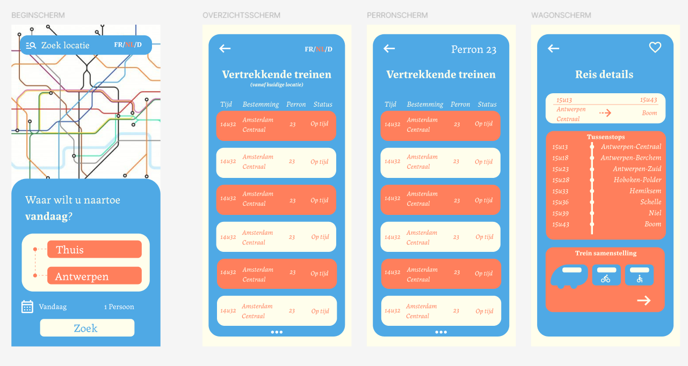

Week 10
Deze week werden we opnieuw verdeeld in twee groepen. In het eerste lesdeel werkten we verder met Tailwind. We konden nu beginnen met het aanpassen van onze eigen website en ontdekten verschillende opties en mogelijkheden die Tailwind biedt om websites visueel aan te passen.
In het tweede deel van de les richtten we ons weer op Figma. We moesten onze treinschermen aanpassen zodat ze geschikt waren voor het formaat van een mobiele telefoon, zodat er binnenkort een interactieve app van gemaakt kan worden.
Deze week stond vooral in het teken van praktische toepassing van Tailwind op onze websites en optimalisatie van Figma-ontwerpen voor mobiel gebruik, wat een belangrijke stap is richting een interactieve en gebruiksvriendelijke app.
